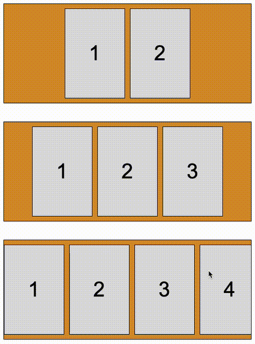

在页面布局中，我们经常会遇到/使用这么一类常见的布局，也就是列表内容水平居中于容器中，像是这样：
<ul class="g-contaner">
<li></li>
<li></li>
</ul>
ul {
width: 500px;
display: flex;
flex-direction: row;
flex-wrap: nowrap;
justify-content: center;
align-items: center;
gap: 10px;
}
效果如下：
这里，外层的容器是定宽的，内层的 flex-item 也是定宽的。
当 flex-item 个数较小时，是没有问题的。但是，如果当元素内容过多，并且设置了 flex-wrap: nowrap 的话，内容就会溢出容器：
此时，我们有几种解法，其中一种便是给父容器设置 overflow: auto 或者 overflow: hidden，让父容器可以滚动，像是这样：
ul {
// ...
overflow: auto;
}
效果就变成了这样：
我们尝试滚动一下这个容器，会发现一个致命问题：容器只能向左滚动，无法向右滚动，因此只能看到后半部分被截断的内容，而无法看到前半部分被截断的内容：
什么意思呢？结合上面的 Gif 与下面这张示意图，一看就懂：
针对这个问题。其中一类比好好的解法在于，当 flex-item 不足以溢出时候，flex-item 居中展示，而当 flex-item 的数量溢出父容器宽度时候，布局上采用类似于 justify-content: flex-start 的样式进行排布，这样可以保证内容在滚动的过程中能够全部看到。
正常效果应该如下：
上面第一、第二行就是 flex-item 不足以溢出时候，flex-item 居中展示， 而第三行 ，就是当 flex-item 的数量溢出父容器宽度时候，布局上采用类似于 justify-content: flex-start 的样式进行排布，这样可以保证内容在滚动的过程中能够全部看到。
因此，本文我们将一起探讨一下，在面对这个问题时的几种不同方式的解法。
方法一：Flex 布局下关键字 safe、unsafe
其实，规范也已经注意到了布局下的这个居中滚动问题。
因此，在从 Chrome 115 开始，flex 布局下新增了两个关键字 safe 和 unsafe。
基于 CSS Box Alignment Module Level 3，明确列出了这种安全（safe） 与不安全(unsafe) 的布局说明：
而今天，我们可以直接在对齐模式中，通过 safe 关键字解决这个问题。
我们简单改造一下上述我们的 flex 布局代码，将 justify-content: center 改为 justify-content: safe center 即可：
ul {
width: 500px;
display: flex;
flex-direction: row;
flex-wrap: nowrap;
- justify-content: center;
+ justify-content: safe center;
align-items: center;
gap: 10px;
}
此时，flex 布局就能自动识别当前 flex 容器下的 flex-item 数量是否超出容器宽度/高度，从而改变对齐方式。
完整的代码，你可以戳这里自己感受：CodePen Demo -- 使用 Safe 关键字解决 Flex 居中溢出问题
目前而言，这个方法唯一的问题在于 兼容性，safe 关键字的大范围使用，还需要静待一段时间。
方法二：使用 margin: auto 替代 justify-content: center
因此，我们有必要继续去探寻其它解决方案。
在之前，有发过另外两篇 flex 相关技巧性的文章 --
除去 justify-content: center 之外，其实我们还可以利用 margin: auto 实现子 flex-item 的水平居中。
我们改造一下文章一开始的示意 DEMO：
ul {
width: 500px;
display: flex;
flex-direction: row;
flex-wrap: nowrap;
gap: 10px;
}
li {
margin: auto;
}
此时，flex-item 在 margin: auto 的作用下，会均分整个容器的剩余空间，并且是水平和垂直方向上的。
用规范的话说就是，设置了
margin: auto的元素，在通过justify-content和align-self进行对齐之前，任何正处于空闲的空间都会分配到该方向的自动 margin 中去。
所以，margin: auto 也是一种居中非常重要的技巧，虽然我们常将这个技巧用于 flex 布局下的垂直居中。可以翻看一下上面提供的两篇文章。
有趣的是，当 flex-item 的数量溢出父容器宽度时候，由于没有剩余空间了，此时 margin: auto 其实相当于失效了，因此布局上的效果同样也是采用类似于 justify-content: flex-start 的效果进行排布。
同样能达到我们的目的：
完整的代码，你可以戳这里自己感受：CodePen Demo -- 使用 margin:auto 解决 Flex 居中溢出问题
方法三：额外嵌套一层
上面的 margin:auto 虽然没有兼容性问题，但是有一点点瑕疵。我们仔细对比 margin: auto 与 justify-content: center 在 flex-item 不足以溢出下的表现：
瑕疵在于，使用 margin: auto 的方式，flex-item 之间的间距是不可控。因为它们始终会去平分剩余空余空间。
2023-12-06 更新，基于
margin: auto不可控的方式，其实通过只给子 item 的首个元素添加margin-left: auto，给尾元素添加margin-right: auto，其实是可以解决间距问题的。
所以，兼容性最好的方式，就是我们多叠加一层，同样可以巧妙的解决这个问题。
原结构：
<ul class="g-contaner">
<li></li>
// ...
<li></li>
</ul>
改造后的结构：
<ul class="g-contaner">
<ul class="g-wrap">
<li></li>
// ...
<li></li>
</ul>
</ul>
改造后的 CSS：
.g-contaner {
width: 500px;
height: 200px;
display: flex;
flex-wrap: nowrap;
flex-direction: row;
justify-content: center;
align-items: center;
overflow: auto;
}
.g-wrap {
display: flex;
gap: 10px;
max-width: 100%;
}
我们通过多设置了一层 g-wrap，并且设置了 max-width: 100%，当然，它也是一个 flex 容器。
因此当：
.g-wrap内 flex item 宽度不足 100% 时，整个.g-wrap受到其父容器的justify-content: center限制会表示为水平居中；- 当
.g-wrap内 flex item 宽度超出 100% 时，由于设置了max-width: 100%，所以，整个容器最大宽度就是.g-container的宽度。此时的子 flex item 的表现就是默认的justify-content: flex-start，因此内容也是从头开始展示，滚动场景下没有问题
至此，我们借助多嵌套一层，同样完美的解决了整个问题。其效果与方法一类似，就不再额外贴 Gif 图。
完整的代码，你可以戳这里：CodePen Demo - 使用额外嵌套层解决 Flex 居中溢出问题
总结一下
好，我们快速总结一下三种方式的优劣对比：
- 方法一：Flex 布局下关键字 safe、unsafe，修改代码量最少，效果完美，核心问题在于兼容性目前不佳；
- 方法二：使用 margin: auto 替代 justify-content: center，兼容性好，问题在于 flex item 不足父容器 100% 时，元素之间间距无法控制；
- 方法三：额外嵌套一层，效果完美，改造量略多一点点。
三种方式各有优劣，基于实际面临的业务场景再做选择。
同时，本文举例采用了水平方向的例子，实际在业务中，我们同样可能会遇到垂直方向一样的问题，本文中的解法都是通用的。并且，基于 safe 的解法中，除了 justify-content: safe center 外，safe 关键字还可以应用于 align-items 和 align-self，实际使用时，结合规范，选取最适合的写法。